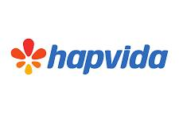

Hapvida Empresarial · Bahia
Saúde para cuidar de você, com economia de verdade.
O Hapvida é uma opção para quem busca um plano de saúde econômico, com uma rede própria e integrada de hospitais, prontos atendimentos, clínicas e unidades de diagnóstico. Você pode escolher entre a modalidade Ambulatorial e o Nosso Plano, de acordo com a cobertura que precisa.
Opção econômicaRede própria na BahiaAmbulatorial ou completo

Escolha a cobertura ideal para sua necessidadeConheça as duas modalidades e veja a estrutura de atendimento Hapvida na Bahia.Duas modalidades
Escolha entre Ambulatorial e Nosso Plano
O Ambulatorial prioriza consultas, exames e atendimentos ambulatoriais. O Nosso Plano amplia a proteção com cobertura hospitalar, incluindo internações, cirurgias e parto, conforme as condições contratuais.
Hapvida Ambulatorial
Uma alternativa de menor custo para quem procura acesso a consultas, exames e cuidados ambulatoriais.
- Consultas médicas.
- Exames previstos na cobertura ambulatorial.
- Terapias ambulatoriais cobertas.
- Atendimento de urgência e emergência, conforme regras do produto.
- Acesso à rede ambulatorial Hapvida disponível na região.
Importante: não inclui parto, cirurgias nem internações hospitalares acima de 12 horas, conforme a modalidade informada para este produto.
Hapvida Nosso Plano
Para quem deseja a cobertura ambulatorial somada à proteção hospitalar.
- Tudo o que está previsto no Ambulatorial: consultas, exames, terapias e urgência e emergência.
- Internações hospitalares.
- Cirurgias cobertas pelo contrato.
- Cobertura para parto, conforme segmentação e carências contratuais.
- Mais tranquilidade para situações que exigem atendimento hospitalar.
Em resumo: reúne os atendimentos ambulatoriais e a cobertura hospitalar, observadas as regras, carências e segmentação contratadas.
Compare as coberturas
| Tipo de atendimento | Ambulatorial | Nosso Plano |
|---|---|---|
| Consultas médicas | Incluído | Incluído |
| Exames | Incluído | Incluído |
| Terapias ambulatoriais | Incluído | Incluído |
| Urgência e emergência | Incluído* | Incluído* |
| Cirurgias | Não inclui | Incluído* |
| Internação hospitalar | Não inclui acima de 12h | Incluído* |
| Parto | Não inclui | Incluído* |
Rede própria e integrada
Conheça alguns hospitais Hapvida na Bahia
O ebook institucional de rede própria e integrada apresenta hospitais, prontos atendimentos, clínicas e unidades de diagnóstico em diversas cidades baianas.

Hospital Tereza de Lisieux
Av. Antônio Carlos Magalhães, 2408 – Itaigara, Salvador – BA.
Salvador
Hospital Lauro de Freitas
Rod. BA, 2077 – Centro, Lauro de Freitas – BA.
Lauro de Freitas
Hospital Semed
Rua Francisco Drumond, 238 – Centro, Camaçari – BA.
Camaçari
Hospital Francisca de Sande
Rua Professora Edelvira de Oliveira, 140 – Centro, Feira de Santana – BA.
Feira de Santana
Hospital Cetro
Rua Elvira Dórea, 1 – Centro, Alagoinhas Velha – BA.
AlagoinhasSalvadorLauro de FreitasCamaçariFeira de SantanaAlagoinhasCandeiasSimões FilhoDias d’ÁvilaMata de São JoãoCruz das AlmasSanto Antônio de JesusCatu
Estrutura integrada
Hospitais, clínicas e diagnósticos conectados.
O material institucional descreve um modelo que integra atendimento médico, exames clínicos e diagnósticos em uma estrutura própria, com foco em praticidade e continuidade do cuidado.
Além dos hospitais, o ebook lista na Bahia:
• 2 prontos atendimentos
• 18 clínicas
• 20 unidades de diagnóstico
Dados do material institucional da rede Hapvida, referente ao 1º trimestre de 2025. A disponibilidade depende do produto e da rede contratada.
• 2 prontos atendimentos
• 18 clínicas
• 20 unidades de diagnóstico
Dados do material institucional da rede Hapvida, referente ao 1º trimestre de 2025. A disponibilidade depende do produto e da rede contratada.
*A cobertura efetiva depende da segmentação assistencial, do contrato, das carências, da área de comercialização e da rede credenciada disponível para o produto contratado. O ebook utilizado é institucional e apresenta a rede própria e integrada da Hapvida; ele não confirma, por si só, que todas as unidades estejam disponíveis em ambas as modalidades. Consulte a rede vigente e a elegibilidade antes da contratação. Endereços e unidades foram transcritos do ebook, páginas 32 a 42.
Quer descobrir se o Hapvida é a opção certa para você?
Fale com Gerry Dias e receba uma orientação sobre a modalidade Ambulatorial ou Nosso Plano para seu CNPJ.